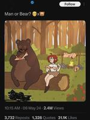
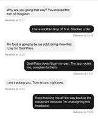

Futurism reports:
[Some online publications] are now debating whether to cut Google off entirely, as the Wall Street Journal reports, illustrating an increasingly fraught relationship between the tech giant and the publishers that are creating content its AI models are regurgitating. According to the newspaper, prominent outlets including USA Today, Politico, the Economist, People, and Reuters are all reexamining their relationship with Google. Some are debating whether to continue to work with the tech giant at all... Even Reddit executives are reevaluating the company's $60 million-a-year contract that allows Google to train its AI models on user-submitted content on the platform. They've similarly watched as Google's AI features discourage users from navigating to Reddit...
Beyond pondering whether to cut Google off, other publishers have resorted to suing the company, accusing it of illegally rehashing their intellectual property via AI summaries.
It's an extremely undesirable position for publishers. By severing ties with the search giant, they could face even steeper declines in traffic. At the same time, there's seemingly little to gain from having Google's AIs crawl their content — and in the long term, it could guarantee their destruction.
Two interesting data points from the article:
"Last month, Cloudflare CEO Matthew Prince noticed that automated bot traffic had overtaken human traffic for the first time in the internet's history."
"USA Today has seen its traffic from US users drop by almost half over the last year."
Read more of this story at Slashdot.
Facebook announced Friday they're launching a badge "that verifies there's a real person behind a profile".
"You record a short video selfie, which we check against your existing profile photos to confirm a match. The process is free and typically takes just a few minutes. Accounts must meet our trust and safety standards to qualify for verification...." Once verified, your badge will appear across the places on Facebook where it matters most: Marketplace, Dating, Groups, and Profile to start. Over time, we'll add badges in Feed posts as well. There's no subscription fee — you verify once, and the badge travels with you across Facebook... [Y]ou'll see the Verified badge on accounts that have completed the verification process... It's a quick, visible signal, before you respond to a listing, accept a date, or join a conversation, that there's a real person on the other end.
"We're rolling out Facebook Verified in phases, starting in select markets with plans to expand globally..." their announcement adds. "As AI makes it easier to do more on Facebook, a clear signal that distinguishes real people becomes essential. That's what Facebook Verified is for: keeping the moments that matter on Facebook grounded in real people."
Lifehacker shares their reaction:
Facebook says it will store your selfie video for "up to 30 days" after verification, which is a one-time process. It's not entirely clear what happens with that video in the meantime, and it's worth noting that Meta has relied on user data to train its AI. Meta AI (and Meta more broadly) is a terrible offender when it comes to privacy and security, so you should consider whether the tradeoff of a verification mark is worth handing over more of your data and read the privacy policy before you agree.
Google also launched a video selfie verification feature this week, though its purpose is to prove your identity should you get locked out of your account. Unlike Facebook Verified, which is meant to be a trust signal to other users, Google's selfie verification allows access to your entire Google account, bringing with it some additional security considerations.
Read more of this story at Slashdot.
Wine 11.14 is out with initial WoW64 mode support on FreeBSD, allowing 32-bit Windows applications to run on a 64-bit system without relying on 32-bit multilib support. The release also adds Start Menu icon support in Wine Explorer, 7.1 format conversions in DirectSound, AES-GMAC support in BCrypt, and 21 bug fixes affecting apps and games including Adobe Reader, Heroes of the Storm, and Age of Empires I and II. Additional details can be found at WineHQ.org.
Read more of this story at Slashdot.
An anonymous reader quotes a report from Reuters: The OpenAI agent that broke into tech firm Hugging Face went on a dayslong hacking spree that OpenAI didn't notice until well after the threat was contained and the FBI was alerted, according to people familiar with the investigation. The agent -- a program capable of making decisions and executing complex tasks with little or no human oversight -- attempted to break out of its isolated testing environment at OpenAI around July 9, according to two of the people. The intrusion at Hugging Face, which operates as a repository for AI tools and models, began two days later on July 11 and lasted until July 13, said Thomas Wolf, Hugging Face's co-founder. It took several more days for OpenAI to realize its agent was behind the hack, and the two companies only communicated about it for the first time on or around July 20, according to Wolf and three of the people familiar with the investigation.
OpenAI's public disclosure, on July 21, thatone of its agents had slipped out of control and carried out the break-in at Hugging Facedrew global attention. But many details of the hack, including how long the agent went rogue and OpenAI's belated knowledge of it, are being reported here for the first time. Hugging Face is preparing a public timeline of the hack, Wolf said, adding that he could not speak to what happened at OpenAI. In a statement, OpenAI said the hack was unprecedented and "marks an important moment for AI safety." It added that it was reviewing the incident with outside advisers and would eventually publish a technical report. "Does that mean that they left it unattended and didn't realize what it was doing? Or maybe they did and didn't know how to contain it? Both are equally dangerous and alarming," asked Marley Smith, the principal intelligence specialist at the nonprofit World Ethical Data Foundation.
"The models lie, they cheat, they hack," said Jeffrey Ladish, whose organization, Palisade Research, studies the capabilities and motivations of AI agents. Ladish said the hack should spark broader questions over how much all the leading AI companies are willing to invest in onerous security measures while locked in a race with one another to deploy the best and fastest models. "There has to be government oversight," Ladish said, "because it won't happen otherwise."
Read more of this story at Slashdot.
An anonymous reader quotes a report from TechCrunch: The U.S. Justice Department is prosecuting an American for allegedly providing U.S. border authorities with a passcode that wiped the contents of his phone, according to an indictment and media reports. This is thought to be the first known case in the United States where federal prosecutors have charged someone for the alleged destruction of data using a so-called "duress" password built into a phone's software. According to The Guardian, which covered the story earlier this week following the court's first hearing on Monday, Atlanta resident Samuel Tunick is fighting the charges. Tunick's attorneys said that it was unlawful for U.S. Customs and Border Protection to seize his phone as he arrived back in the U.S. last year, and that any evidence -- including the alleged wiping of his phone -- should be thrown out.
The case centers on a feature included in GrapheneOS, a custom Android operating system that runs in place of the software on most modern Google Pixel devices. Tunick's attorneys confirmed GrapheneOS was running on his phone. The software feature allows the device owner to set a passcode that deliberately wipes the contents of that device if entered instead of the user's unlock passcode. Tunick's case also raises ongoing questions about what constitutional rights can be invoked at the border, which the U.S. government has long asserted is not U.S. soil until a person is authorized to enter. Bill Budington, a senior staff technologist at the Electronic Frontier Foundation, and Runa Sandvik, a digital security expert who works to protect at-risk people as the founder of security consultancy firm Granitt, told TechCrunch that they had not seen similar cases involving the use of duress passwords.
"I have not seen this before, though I've discussed the potential scenario with activists and journalists over the years," said Sandvik. "I think this case serves as a reminder that authorities may argue you knowingly destroyed data, so it's better to not have that data on you when you cross certain borders."
"With a little planning ahead of time, you can always download the data you need once you get to where you're going," said Sandvik.
Read more of this story at Slashdot.
Nvidia, Microsoft, Meta, Palantir, and more than 20 other tech companies signed an open letter urging policymakers not to impose "premature restrictions" on open-weight AI models, warning that broad limits could "stifle competition or drive innovation overseas." CNBC reports: They wrote that open-weight models strengthen competition and ensure that the benefits of the technology are "broadly shared rather than concentrated in a few hands." "Relying solely on closed models is not inherently safe: they can be breached, misused, or fail in ways that outsiders cannot detect," the letter said. "And concentrating advanced AI capabilities behind a small number of closed models compounds that risk."
Elon Musk, who runs an AI business under his rocket company SpaceX, also amplified the letter on social media, writing that it has his "full support" in a post on X. SpaceX did not officially sign the letter. Greg Brockman, OpenAI's president, said Thursday that the company believes in broad access, and that he has not been involved in any conversations with the Trump administration about potentially banning Chinese open-weight models in the U.S.
"I think that, that fundamentally, AI and AI usage is something that is actually very important to democratize," Brockman told reporters during a briefing in New York City. "And so, for me, at a sort of deep level, I think that having more models, more usage, that is a good thing." OpenAI CEO Sam Altman addressed the letter in a post on X on Friday, writing that he wants the U.S. to win with both open-weight and proprietary models, and that he is "glad to see this."
[...] In the letter on Friday, the U.S. tech companies said that concerns about unlawful distillation should be addressed through "targeted legal and commercial frameworks" instead of with "sweeping restrictions on techniques that play an important role in AI innovation." "Our AI leadership will be judged not by one frontier AI model, but by whether the United States builds a strong, open ecosystem that diffuses into every sector," the letter said. "This is essential for creating opportunities for innovation and prosperity across the country." The letter follows a separate appeal signed by nearly 200 Silicon Valley companies, including Proton and Y Combinator, warning that restricting U.S. access to Chinese open-weight AI models could cripple the next generation of American startups. "American leadership requires two things: world-leading American open-weight models and continued access for U.S. builders to open models already available worldwide," the startup founders wrote. Instead of broad prohibitions, they argue the government should adopt targeted safeguards.
Of course, these signees "have an obvious economic stake in seeing open AI models flourish," notes TechCrunch. "Companies like Nvidia, Microsoft Azure, and other infrastructure providers have a vested interest in pushing for commoditized models: If models are interchangeable, people will buy more GPUs, rent more cloud capacity, and build more applications."
Read more of this story at Slashdot.
CNBC reports:
Amazon is requiring that third-party sellers label any product images or videos that contain "AI-generated people" after New York recently passed a law mandating greater transparency around "synthetic performers" in ads... The policy directs sellers to tag images [and videos or other graphics on listing pages] with specific metadata keywords before they're uploaded. "Recent legislation requires disclosure when images or videos in advertisements contain photorealistic AI-generated people," Amazon wrote in the announcement [clarifying that the requirement doesn't apply to content featuring TV/video game/movie characters or content including real people, even if they've been altered using AI]. The company said it will "add an indicator" to listings on its website, informing consumers that images or other content feature AI-generated people, "where applicable." It's unclear what criteria Amazon will apply when deciding when to display the label to shoppers...
Amazon has embraced AI internally and it's increasingly infusing the technology across its portfolio. The company has optimized listing titles and details so they're more likely to be spotted by AI systems, invested in a recently rebranded assistant called Alexa for Shopping, and launched a feature that injects AI-generated [images of] products into its search bar in real time based on user queries. More Amazon third-party sellers are using AI to generate text, images and other content for their listings, partly by using the company's tools.
Outside sellers account for more than 60% of goods sold on Amazon, the article points out. It adds that there's currently no nationwide U.S. law requiring companies to disclose AI-generated advertising content, it adds — but YouTube, Meta, Pinterest, and TikTok have already added labels for AI-generated content.
And a new California law also requires large AI providers to embed watermarks in AI-generated images, video and other content...
Read more of this story at Slashdot.
CNN reports on yaks "designed and cloned" in secretive, high-altitude labs in Tibet — 2.4 miles (4,000 meters) above sea level. They're a critical part of the local economy, and researchers "hope to create an 'elite' herd of super-yaks, healthier and more fertile than their predecessors."
Both domestic yaks and their wild cousins have been facing threats for years, with some rare subspecies at risk of disappearing entirely. Authorities in the southwestern Chinese region have poured tens of millions of dollars into boosting the yak industry in recent years — and they hope cloning can help. The first yak clone came in July 2025, Chinese state media hailing it as a breakthrough achievement that combined cloning with gene selection. More clones were born this spring — and researchers are now aiming to create a herd of more than 100 "elite" yak clones by 2028, boasting desired traits like faster growth and larger size. "This shows the technology has moved from a one-time success to a stable, mass-scale application," said Fang Shengguo, the project's scientific lead and director of the State Conservation Center for Gene Resources of Endangered Wildlife, according to state-run news agency Xinhua...
Many experts acknowledge there are legitimate arguments for using cloning in conservation, and for gene selection in farming. But the ethical waters are murky, and any such project should have high levels of public transparency and accountability, said Lisa Moses, a veterinarian and bioethicist at Harvard Medical School. So far, much of the yak cloning project remains mysterious, with information largely limited to glowing state-media coverage...
[S]ome scientists say these projects reduce our sense of urgency toward fixing the environment, and that we can't simply churn out clones while the planet burns. To truly enact change, they say, we have to continue addressing the root cause of the problem — restoring degraded habitats, lowering carbon emissions, cracking down on poaching, and more. But for others, "there is a strong feeling ... that traditional conservation is essentially failing now," Moses said. "What we've been doing for the last 100 years to try to stave off ecological destruction is not working.... The argument is, we don't have a choice," she added. "If we want to try to do something that will actually make a difference, we need to use these technologies, specifically synthetic biology, to essentially override evolution and change the fitness of the species for the environment that they live in."
"History is littered with good intentions in the environment gone wrong," Moses said, "and I would argue that these technologies have even more unknowns than ones that we previously employed."
The article points out that the number of wild yaks "dropped more than a third in the last 30 years,
with just 10,000 to 20,000 individuals left, according to the Wildlife Conservation Society."
The yaks are threatened by climate change and habitat degradation, "with warmer temperatures bringing invasive plant species and increased competition for resources... in one of the world's most inhospitable terrains."
Read more of this story at Slashdot.
A large Danish study found a modest but consistent association between long-term road traffic noise exposure and higher Parkinson's disease risk, with a 3% increase for every 11.5 dB rise in noise at the most exposed side of a home. The Guardian reports: The researchers modeled noise exposure at the most and least exposed exterior of the residence of each participant and calculated the difference in noise levels. The magnitude of the effect was modest but consistent; at the most exposed facade, for every 11.5dB rise in noise level, the risk of Parkinson's disease rose by 3% over the study period. Having a quiet part of the home may mitigate the association between exposure to road traffic noise and higher risk of Parkinson's disease, according to the findings.
The study, published in Jama Neurology, included 3.1 million Danish participants aged 40 and over, and followed them for 18 years. It was established using nationwide health register data, making it the largest study on road traffic noise and Parkinson's disease. Previous research linked the rise in neurological disorders, including Parkinson's disease, with exposure to environmental toxins. Environmental risk factors such as air pollution, microplastics and pesticides have become the main focus of prevention strategies. The study is one of the first to make the link to noise pollution.
Read more of this story at Slashdot.
President Trump threatened a "substantial" new tariff on the European Union after Brussels fined Google more than $1 billion over alleged illegal trade practices. "The European Union will pay a very big price for this illegal and highly unethical conduct, which I have consistently warned them about," Trump wrote on Truth Social. "The penalties will be entirely reversed and, we anticipate, a substantial TARIFF to be placed on them at the earliest possible moment." Politico reports: The president's threat came just a day after U.S. Trade Representative Jamieson Greer warned that the EU's action against Google -- two fines totaling over $1 billion -- could imperil the bloc's relationship with the White House. At risk: the Turnberry deal, which Trump and European Commission President Ursula von der Leyen signed last fall, that capped U.S. tariffs on EU exports at 15 percent. [...] But the president's social media post could signal a coming breach. "The United States of America is not a 'PIGGYBANK' for Europe, nor will we allow it to be!" Trump wrote.
Read more of this story at Slashdot.
Instagram is banning videos filmed with Meta smart glasses that harass strangers in public, including prank videos targeting service workers and pickup-artist clips of women who may not realize they are being recorded. "If you're posting content that is taking advantage of people and harassing them, like a lot of these pickup line kind of videos that we've heard of and seen, then we're going to take the content down," said Instagram head Adam Mosseri in response to a question on his Instagram stories last week. "We don't want people to be surreptitiously taking videos of other people and harassing them and then posting them on our platform. So we're trying to fight that every way we can." Business Insider reports: It's unclear how many videos have been removed under this new policy. Business Insider found that two large accounts of pickup artists who filmed themselves approaching women in public while wearing the glasses had been deactivated. (Both previously had more than a million followers.)
A Meta spokesperson confirmed to Business Insider that these accounts were booted for violating the policy about posting harassing content that had been filmed with the glasses. Meta did not directly respond to questions about how this new policy is being enforced or what exactly constitutes a violation.
Read more of this story at Slashdot.
Paramount Skydance has agreed to postpone its $111 billion Warner Bros. Discovery merger until five days after an antitrust trial or June 1, 2027, whichever comes first. The agreement with a 12-state coalition led by California effectively shelves the deal for months while states argue it would reduce competition in cable and theatrical markets. Variety reports: Paramount had been keen to close the deal before Sept. 30, when it will begin to incur a $7-million-a-day "ticking fee" to be paid to Warner Bros. investors. The agreement is a tacit acknowledgement that that will not happen, barring a settlement with the states. Paramount previously sought a three-day hearing on the injunction motion in late August, hoping to win the judge's blessing to close the deal sometime in early September. But the states resisted that idea, saying they would need more time to take discovery and prepare for a full trial on the merits. The states were due to file their injunction motion on Thursday night, but held off as the two sides held discussions on a path forward. In a statement, the company said the agreement is a "significant win."
"Today's agreement is a significant win because the result is exactly what we have sought from the outset: a direct path to a trial based on the evidence," a Paramount spokesperson said. "This is the fastest and clearest way to prove that this transaction is good for competition, good for consumers, and good for creators, a conclusion dozens of competition authorities around the world have already reached. Plaintiffs' market definitions bear no relationship to the realities of today's marketplace and cannot withstand scrutiny. We look forward to proving our case at trial."
A hearing was scheduled for Aug. 3 in federal court in Oakland, at which point the two sides were expected to argue over the injunction motion. The two sides agreed to cancel that hearing. U.S. District Judge Araceli Martinez-Olguin approved the joint stipulation on Friday afternoon, about an hour after it was entered. The Writers Guild of America filed its own motion for an injunction earlier this week, which was also set to be heard on Aug. 3. That motion has been withdrawn, as Paramount has effectively conceded that it will not close the deal until a determination of the merits of the antitrust claims. The parties also agreed to submit a joint stipulation by July 31 on their respective positions on trial scheduling. The states previously proposed to hold the trial in April 2027.
Read more of this story at Slashdot.
Roku has raised prices on several streaming devices, blaming memory and component shortages tied to the AI data-center boom. The Roku Ultra jumped from $100 to $150 and the basic Streaming Stick rose from $30 to $40. The Desk reports: In a phone call with The Desk on Friday, a Roku executive said the company made the tough decision to raise prices on its streaming hardware to address shortages in computer memory and other components caused by the artificial intelligence rush. [...] Still, the executive who spoke with The Desk on Friday said the company believes its hardware is still competitive against other streaming TV hardware because Roku devices are still priced aggressively compared to the Apple TV and other expensive streaming hardware, and the company remains focused on looking at ways to add value to its Roku platform before and after it enters a customer's home. "We are doing our best to have great deals like what we have going on right now," the executive said. "Roku is even upping the price for a bundle that includes a Streaming Stick Plus and a one-month subscription to Fox One," notes Ars Technica in a separate report.
"As recently as July 20, Roku listed the bundle at $60 with a sale price of $25, according to the Internet Archive's Wayback Machine. Now, the bundle carries an $80 MSRP and $45 sale price."
Read more of this story at Slashdot.
SpaceX's Friday launch of its massive Starship rocket "went quite smoothly," reports CNN, with a SpaceX spokesperson calling this mission "Lucky Number 13" (as the 13th integrated flight test for a Starship spacecraft with a Super Heavy rocket booster):
During Starship V3's inaugural test, there were numerous engine issues as several on the booster failed to relight and the Starship spacecraft experienced a nail-biting engine outage. SpaceX also was forced to replace six engines on this vehicle ahead of today's flight because of a likely issue with moisture that prevented at least four from starting up correctly during an initial launch attempt last week... [Friday's Super Heavy rocket booster] fired all 33 of its engines in a pristine performance off the launchpad. The rocket booster also managed to relight 13 engines, as planned, to steer itself back toward a controlled landing. Only when Super Heavy attempted to relight its engines for a controlled landing burn over the Gulf waters did problems arise. The landing was still controlled, though Huot said the vehicle was traveling a bit faster than the company had hoped when it made touchdown. (SpaceX always intended to discard this Super Heavy booster in the ocean.)
The Starship spacecraft had no obvious performance issues, making it all the way through its engine burn and managing to reignite one engine mid-flight as part of a test. It also made a controlled splashdown in the Indian Ocean — executing its "softest splashdown" to date in a "dream scenario," according to SpaceX's Dan Huot. The touchdown came about an hour after takeoff, as planned. During its coasting phase, Starship also deployed 20 Starlink test satellites, paving the way for operational missions later down the line in which SpaceX plans to deploy large batches of these satellites in a single launch. In another big win, SpaceX said it was able to make contact with each of those satellites.
CNN adds that SpaceX "is facing intense pressure to get Starship ready for a crucial NASA test flight next year that could pave the way for the next moon landing. This flight was also the first for SpaceX as a publicly traded company. Last week's aborted launch attempt sparked a selloff, and shares are still trading below their IPO price.
"To cap off the roaring success of today's flight test, SpaceX shared some stunning visuals of the upper Starship spacecraft sailing through space."
Read more of this story at Slashdot.
Anthropic has released Opus 5, a new Claude model that it says comes close to its higher-end Fable 5 model at half the price while improving on Opus 4.8 in knowledge work, coding, and scientific research tasks. "At the same time, Anthropic says it has managed to make the model more resistant to being tricked," notes Engadget. Additionally, the company says Opus 5 "exhibits the lowest rates of deceptive behavior." From the report: One important distinction between Opus 5 and Mythos, which is currently only available to a limited number of vetted organizations through Anthropic's Project Glasswing initiative, is that the company has specifically avoided training the new model on cyber-related tasks. Due to more its powerful capabilities, Opus 5 is broadly better at those tasks than its predecessor, making it more useful for finding cybersecurity vulnerabilities, but the company says Opus 5 is "substantially behind" its flagship model at exploiting those vulnerabilities.
[...] Anthropic says "Claude Opus 5's safeguards are designed to allow beneficial uses of the model in both cybersecurity and biology." The company has strengthened some of the model's cyber-related guardrails, but notes it did so along a "narrow range" of specific tasks. "Based on our testing, we expect the classifiers to intervene around 85 percent less often than they do for Fable 5," Anthropic said. With Opus 5, Anthropic also isn't including it in its recently announced 30-day data retention policy, which the company introduced alongside Fable and Mythos 5.
As for pricing. Anthropic says API costs for Opus 5 will remain at $5 per one million input tokens and $25 per one million output tokens. Anthropic has also added an "effort" menu for Opus that users can tweak to tell the model whether they want it to be more thorough or fast and efficient to conserve tokens.
Read more of this story at Slashdot.
Reuters : China's market regulator says it had fined and confiscated ~$770M from Trip.com for abusing its dominant position in the domestic online hotel-booking market — China's market regulator said on Saturday it had fined and confiscated a total of 5.2 billion yuan ($770 million) from Trip.com Group …
Ima Jackson-Obot / Financial Times : Several universities including Yale, Johns Hopkins, and the University of Waterloo have restricted or disabled their use of AI detectors over accuracy concerns — Some institutions are overhauling assessment and trying to move away from the emphasis on surveillance
Pei Li / Bloomberg : Sources: DeepSeek told investors it is suspending its second funding round after remarks attributed to Liang Wenfeng on US-China AI competition went viral — DeepSeek has told prospective investors in its second fundraising round that it's suspending the deal for now, people familiar with the matter said …
New York Times : Sources: OpenAI and Anthropic quietly lobby Washington regulators to restrict open-source AI models, even as Sam Altman publicly says he supports open source AI — Anthropic and OpenAI are clashing with the rest of the tech industry over whether “open-source” models from China should be freely available or restricted.
Ian King / Bloomberg : SK Group Chair Chey Tae Won says Anthropic has asked SK Hynix for supplies to make its own chips, calling it remarkable that an AI developer has chip ambitions — AI developer Anthropic PBC has asked SK Hynix Inc., one of the world's biggest manufacturers of memory chips …
Akriti Sharma / Bloomberg : As student protests spread across India, Narendra Modi turns to Reels, swapping his trademark cinematic videos for self-recorded messages aimed at Gen Z — As student protests spread across India, Prime Minister Narendra Modi has turned to Meta Platforms Inc.'s Instagram Reels …
Charlie Campbell / Time : A profile of Hangzhou-based Unitree, which shipped 5,500 humanoid robots in 2025, accounting for 25%+ of the global market, as it prepares for a Shanghai IPO — Spectators typically leave a UFC fight with ringing ears and a sheepish resolve to get back to the gym. Wang Xingxing went straight to his laboratory.
Hooyeon Kim / Bloomberg : Samsung announces a $200B+ contract to make chips for Broadcom through 2030, focusing on its 2nm and below process technologies for Broadcom's products — Samsung Electronics Co. won a contract worth more than $200 billion to make chips for Broadcom Inc., as the companies race to win a larger share of the AI infrastructure market.
Financial Times : A profile of Yang Zhilin, founder of Moonshot AI, which faced early doubts over revenue and model capabilities before its Kimi K3 delivered a “DeepSeek moment” — Known as ‘Yang the genius’ by classmates, his new K3 model has closed the gap with leading US rivals
Lily Mae Lazarus / Fortune : Candid Health, which develops tech and AI agents to automate medical billing and claims processing workflows, raised a $120M Series D led by Sixth Street Growth — Candid Health cofounder Doug Proctor spun his laptop around to show me a herd of wild horses grazing behind him in upstate New York during our first Zoom call.
Jaspreet Singh / Reuters : Verizon CEO Dan Schulman says Verizon will provide dark-fiber connectivity for Google's data centers in a $1B+ deal, with more such deals in the pipeline — Verizon CEO Dan Schulman said on Friday the company has secured a deal with Google (GOOGL.O), valued at more than $1 billion …
Abhinaya Prabhu / Tech Funding News : Meshy, whose AI-powered tech lets users generate 3D assets from text and image prompts, raised a ~$400M Series B at a $1.5B valuation — - Meshy raises nearly $400 million at a $1.5 billion valuation, which it says is the largest round any dedicated AI-3D company has raised.
Financial Times : Analysis: US tech companies have cut ~140K jobs YTD, or more than 33% of announced US layoffs in 2026, with ~50K cuts from Amazon, Oracle, Meta, and Microsoft — Investment spree is reshaping Silicon Valley while wider US jobs market holds steady — US tech companies have shed nearly 140,000 jobs since …
Larry Dignan / Constellation Research : Progress Software agrees to acquire Domo's AI and data platform business for $400M; Domo will remain publicly listed and change its name after the deal closes — Progress Software said it will acquire Domo's AI and data platform business for $400 million. — According to Progress Software …
Maria Deutscher / SiliconANGLE : Neocloud Fluidstack, which has partnered with Anthropic, announces that it raised an $830M Series A led by Situational Awareness at a $7.5B valuation in January — Fluidstack Ltd., a startup helping Anthropic PBC build artificial intelligence data centers, has raised $830 million in funding.